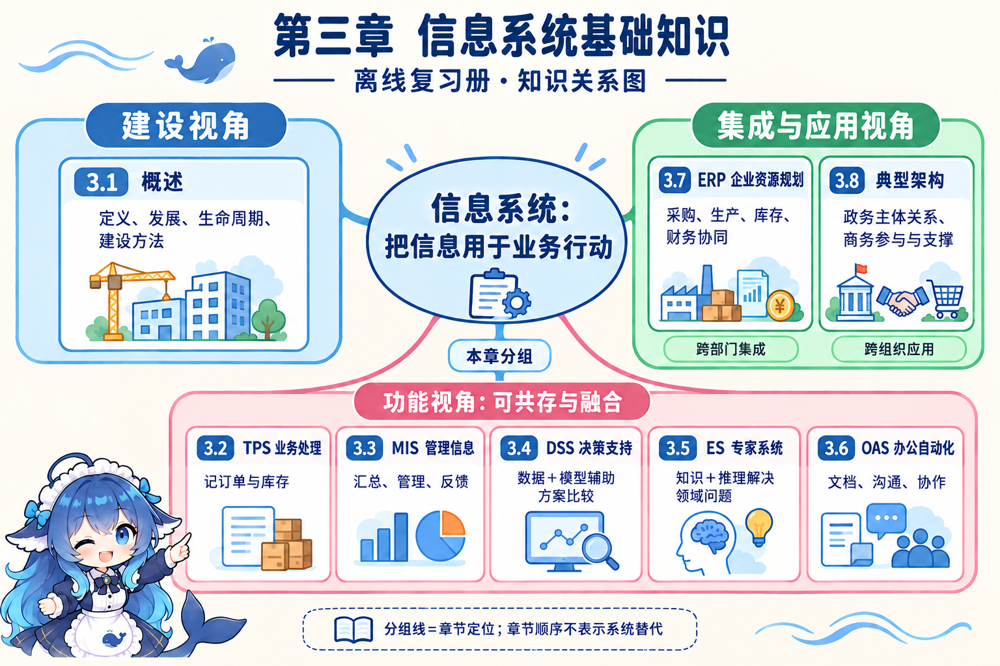

销售记录、生产计划和管理报表都处理信息，却承担不同任务。第三章先建立系统及建设方法的总览，再展开业务处理、管理信息、决策支持、专家推理、办公协作、企业资源集成与典型应用架构。


本册用同一虚构小型家具企业展开概念，电子政务使用另一适合的服务场景。图文解释原因，速查保留判断条件，自测改变情境检验能否迁移；每节作答记录独立。
系统架构设计师高级 · 教程第 2 版
从家具厂的接单、采购、排产到交付，辨认每种系统解决的问题。遇到相近缩写，沿分类轴、输入、处理依据和输出解释选择。
销售记录、生产计划和管理报表都处理信息，却承担不同任务。第三章先建立系统及建设方法的总览，再展开业务处理、管理信息、决策支持、专家推理、办公协作、企业资源集成与典型应用架构。

本册用同一虚构小型家具企业展开概念，电子政务使用另一适合的服务场景。图文解释原因，速查保留判断条件，自测改变情境检验能否迁移；每节作答记录独立。
两库与知识支持、九功能、动态交互、数据模型建设；BI技术和OLAP变化，完整演算条件概率与EMV。速查 · 30 道自测
三流、四阶段、五计划分别观察；用门板数量与不同周/资源的粗细负荷检验计划，覆盖十一组职责与三项功能。速查 · 35 道自测
政务关系/阶段/六领域分别观察；企业创新、规划与六方法，电商五层、EDI、CRM/SCM及EAI按用途和条件配合。速查 · 38 道自测
按英文、中文、别名或用途检索；每项可回到正文中的解释与关系图。
沿三维明确智能制造的标准化对象和范围，本专题采用2021版指南。英文为已核国家标准目录标题，IMSA沿用学习记录作检索简称。
未核到指南将IMSA列作规范缩略语。产品活动、组织职责、智能化要求分轴；不新增教材3.8.3或3.9。
观察产品从原型研发到回收再制造的设计、生产、物流、销售和服务活动。
活动可迭代，行业构成和时间顺序可不同；与信息系统的产生、开发、运行、消亡分别观察不同对象。
依生产相关组织职责区分设备、单元、车间、企业和协同。
不以设备数量、实体大小或软件名称单独定层；具体软件可以覆盖多个层级。
2021指南列资源要素、互联互通、融合共享、系统集成和新兴业态五项智能化要求。
保持这一版名称与次序，不替成数据协同；五项不是五级成熟度，也未自动给出每项必须采用AI的条件。
实现实际物理流程及感知和操控，例如本例感知湿度并执行动作。
设备可以有控制能力。观察实物与观察信息处理、监测控制职责可能涉及不同问题，不能仅凭硬件名称定层。
在企业内处理信息、监测和控制物理流程，例如处理湿度并调整参数。
指南原页未给多设备数量门槛；依据完整职责判断。企业内不自动等于企业层，设备具备操控能力也不否定这项信息控制职责。
面向工厂或车间的生产管理，例如安排整车间生产任务。
单工位的信息监测控制与整车间生产管理按实际任务区分，不根据应用名称排他定层。
面向企业经营管理，例如协调订单、采购与成本。
与车间生产管理及单元控制分别辨认；题干只有企业内三个字不足以确定企业层。
企业内部与外部信息互联共享，实现跨企业间业务协同；本例内部共享计划并与伙伴协调交期。
不能排除内部共享，也不能仅凭多人消息宣称完整业务协同。原错题的信息处理、监测控制职责仍直接对应单元层。
观察生产资源、生产工具及其数字化模型。
数字模型与物理资源都在范围内，不能仅凭某个软件名称证明这一要求完整实现。
通过网络、协议和接口传递数据、交换参数语义；本例按约定实际传湿度数据。
插入网线不证明交换可用；本例交换成立仍不足以证明全厂共享和功能集成均完成。
在互联基础上，通过云计算、大数据等实现信息协同共享。
例如多部门按共同含义使用物料信息，需要共享范围和规则；保留2021名称，不替成其它模型中的数据协同。
观察装备、生产单元、生产线、车间、工厂和系统间的数据交换及功能互连。
接口存在不证明全部业务功能接通。与EAI界面、数据、功能、流程四个对象有联系，但没有逐项对应关系。
结合物理资源与数字数据、模型、系统，支持认知、诊断、预测、决策和虚实迭代优化。
核验实际功能、资源结合和迭代条件；单独装一个预测算法或开商城不足以证明完整要求。
本节用于 SG 的业务作用比较，泛指支持企业信息处理及使用的技术领域。
IT 是领域通称，SG 是观察当前运行依赖和未来战略作用的规划视角，二者不是两类同级系统。
收集、存储、处理和传递信息，支持人的协作、控制和决策。现代计算机信息系统还包括用户、信息资源和规章制度。
组成描述系统有哪些要素，功能描述它完成哪些活动；六种组成与五项功能不能一一配对。广义信息系统也可采用手工单据和规程。
以信息资源的开发和利用为核心，让技术、组织、人员和规程共同支持业务目标。
把纸单改成电子表格只是改变载体；可用库存的共同定义、预留责任和人员培训也需要落实。
观察组织信息化应用的初始、传播、控制、集成、数据管理、成熟六种典型阶段特征。教材把前三阶段归为计算机时代，后三阶段归为信息时代。
控制阶段也可能已有部门数据库；集成要观察重新规划和跨部门共享。模型的对象是组织整体，不能与一套系统的生命周期混接。
本节作为诺兰图中的数据组织设施名称，帮助区分部门数据使用与跨部门共享。
控制阶段也可能已有部门数据库；有 DB 不能单独证明进入集成阶段，应继续检查规划和跨部门共享方式。
按业务规则处理订单、入库、领料等日常事件，形成业务记录和单据。人负责录入、核对或使用结果。
题干关注一笔日常事务的准确登记和规定处理时优先辨认 TPS。普通事务处理不要求先部署数据仓库，也不能只按使用者的岗位等级判断。
在本教材的系统分类语境中，作为 TPS 的历史并用名称介绍，重点仍是日常业务事件。
读取本节题干时与 TPS 的历史命名对应；不能把任意含有数据处理功能的软件都排他地归入这一类。
整理业务数据及其他所需管理信息，支持汇总、统计、计划和管理控制，输出报表、执行情况与偏差信息。
关注按现行规则执行后哪里偏离计划时，观察管理信息与反馈。MIS 可以服务高层管理，信息源也不限于 TPS。
结合数据、决策模型、外部条件与人的判断，比较候选方案及其影响，支持半结构化和非结构化问题。
改变外包价格、可用工时等条件后比较方案，是本节的典型辨认线索；最终决定由人作出，不因岗位高低排他分类。
把领域知识用于已知事实，由推理机制生成领域诊断建议及解释。专家提供知识，人核实事实并评估建议。
需要领域知识推理时辨认 ES；系统名称不能保证推理结论正确，也不能把所有方案比较都归为专家系统。
支持文档、消息、会议等办公事务的沟通、协作、传递、流转与存取。
观察办公协作的任务和信息；审批功能也可存在于业务系统，看到审批不能单独认定为 OAS。
围绕订单、物料、库存、能力与财务等资源数据，协调采购、生产、库存和财务的计划与执行。
本节从资源集成角度观察 ERP，它可同时体现多种功能。教材局部称企业资源管理，本册统一采用企业资源规划；两种译名不新增两类系统。
管理库位、物料收发、盘点和仓内作业，记录仓库实际活动。
仓储职责可以与 ERP、MES 配合；具体产品的部署边界需结合业务确认，不能把所有仓内功能固定画成 ERP 的内含模块。
跟踪、记录和控制实际生产过程，关注车间进度、生产实绩和质量异常。
现场执行要与计划输入相接。教材把 MES 与 SFC 并用介绍，工程产品中的范围可能交叠，不能推广为普遍的名称等式。
在车间控制语境中，指工单、工序、用料和执行管理等功能；本教材与 MES 并用介绍。
先读产品和题干语境：车间控制功能与 MES 可有交叠；某些厂商的 SFC number 是在制实例或批次追踪标识，不能把号码当成系统类别。
维护产品结构、版本、配置和工程变更，使其他业务取得正确的产品规格及资料。
产品定义与现场生产实绩是不同关注点。PDM 可以提供产品资料并参与集成，不能用它替代 MES 的现场执行职责。
作为计划对象说明生产什么产品、多少以及何时完成，为物料需求计算提供计划输入。
Schedule 指计划对象，Scheduling 指制定该计划的活动。本节先定位它与 BOM、MRP 的关系，具体计划分解留到 3.7。
利用主生产计划、BOM、库存等条件计算物料净需求。
MRP 是物料计划方法，要与计划对象 MPS、结构资料 BOM 和现场执行系统 MES 分清。本节仅定位关系，3.7 再展开计算和校验。
描述产品需要哪些组成件及其用量，作为物料需求计算的结构资料。
BOM 描述组成关系，MPS 描述生产目标；结合库存等条件才能计算物料净需求。正文采用 Materials 的常见复数写法，部分历史文档采用单数。
按产生、开发、运行、消亡四个大阶段观察一套系统的一生；开发再包含总体规划、分析、设计、实施和验收。
四大阶段与五个开发子阶段有包含关系。运行包含使用和维护；组织的诺兰演进、模型抽象过程分别使用其他观察轴。
在开发阶段先确定目标、架构、组织和流程、实施计划及技术规范，为后续工作设定边界。
总体规划是本节开发期的工作阶段；CSF、SST、BSP 等是可用于规划的具体方法，二者不是同一分类。
形成逻辑模型，明确系统需要完成什么业务工作，例如登记订单、核对库存和识别缺料。
题干即使写逻辑模型设计，也应按逻辑模型的性质归入系统分析。产生期需求调研与开发期分析的粒度、产物不同。
形成实施方案，说明数据组织、模块、接口和安全控制等怎样实现业务要求。
关注怎样落实逻辑需求时辨认设计；只在题干中看到设计二字，不能把逻辑模型归到这一阶段。
把设计落实为可运行系统，实施过程需要用户深入参与。
本节口径中，实施结束后的试运行已进入验收阶段。实施不能取消用户对业务边界和可用性的确认。
在试运行中检查系统表现，修正暴露的问题，并按约定要求完成验收和移交。
本节把试运行放在验收阶段；验收并移交后进入运行。其他章节的过程划分应按各自口径读取。
调查现有纸单、表格、人员和具体处理方式，描述当前系统怎样工作。
现有物理到现有逻辑是抽象，保留业务本质并分析真实规则；物理与逻辑模型的转换不能混入生命周期成为连续大阶段。
从现有具体做法中抽象出登记订单、核对库存等业务本质。
它描述现有业务需要做什么；加入共享可用量和交期校验等新需求后，进一步形成新逻辑模型。
结合现有业务本质与新需求，明确新系统应完成的业务工作。
逻辑模型仍回答做什么，尚未决定数据库、接口和程序的具体实现；必要时可返回调查和修正。
把新逻辑需求落实为数据库、接口、程序等具体实现方案。
新逻辑到新物理是具体化；四种模型解释认识和形成方案的过程，不能当作四个生命周期大阶段。
修复运行中已发现的错误，例如纠正库存计算错误。
按修改目的分类。修复已有错误的目的不同于适应环境变化、扩充需求或预防未来问题。
适应运行平台或外部要求的变化。
环境和外部要求改变是判断线索；不能只因改了代码就将其归为排错性维护。
按新需求改进系统功能和性能。
观察修改是否为了满足新要求或提升使用表现；与提前改善可靠性、可维护性的预防目的区分。
为提高后续可靠性和可维护性，提前整理代码与结构等。
重点是预防后续问题的目的；四类维护都可能改代码，具体动作名称不能替代目的判断。
承担信息规划、政策、标准和资源管理等统筹职责。
统筹需要高层支持与用户全过程参与；CIO 的职责不能替代销售、仓管、排产等核心用户的业务知识。
先明确全局数据与流程约束，再指导各子系统的详细设计，使跨部门信息保持一致。
总体规划给详细设计设定约束，仍需要落实子系统细节。BSP 中识别目标和过程的方向与此相通，但 BSP 还包含自下而上的设计步骤。
通过阶段工作、文档、审查和验证，使信息系统建设过程可以受控。
检查建设工作的过程和证据；新技术名称或设备数量不能代替业务目标与效果的验证。
从功能和过程出发，自顶向下逐步分解，强调目标清晰、阶段工作、规范文档和结构化设计。
适合成熟、定型的业务，教材同样要求用户沟通。用户参与度低不能当作方法定义；方法也可与原型等配合。
快速形成可试用版本，经用户评价和修改，细化不清楚的需求及交互。
需求和交互尚不清楚时有助于获得反馈，可用于局部问题并与其他方法结合；试用结果不能直接证明正式系统的性能和完整性。
围绕订单、物料等对象和类组织问题域模型，利用封装、继承和多态衔接分析、设计与实现。
关注领域对象与职责建模。项目质量和扩展性仍取决于具体职责及实现，采用 OO 本身不能保证易扩展。
围绕业务能力及契约组织服务，支持不同平台的系统通信和互操作。
已有异构系统需协作时，检查业务能力边界、接口契约和编排。松耦合需要明确契约；SO 方法与 SOA 架构名称分别辨认。
本节借面向服务架构的名称，区分架构与开发方法，并说明操作、服务及业务流程的抽象和组合。
SOA 是架构名称，SO 是本节的方法名称。操作封装为服务、服务编排为流程，是本地题源采用的抽象口径，不能混作生命周期阶段。
在本节服务抽象示例中，表示查询可用库存等可由服务封装的具体操作。
操作、服务、业务流程按抽象与组合观察；不能把一个查询操作直接当作整个订单履约流程。
以业务能力及契约封装相关操作，供调用方使用和业务流程编排。
服务接口定义与内部实现解耦，调用方不必依赖实现细节；这仍要求接口契约清楚。库存、采购是本册教学示例。
在本节服务抽象示例中，编排库存、采购等服务以完成订单履约。
流程可以组合多个服务，服务可以封装多个操作；本例关系不构成三种开发方法的历史替代链。
按业务功能组织对象和类，通过对外接口与其他能力合作。
本节用构件解释对象建模与服务封装之间的联系；这种联系不能推出每个项目都必须依次更换开发方法。图中主要展示方法及服务组合，构件关系见正文。
以集合论和逻辑为数学基础，用状态与操作模式表达状态及变化；本地题源归为状态—操作风格。
数学基础含逻辑，不能据此改判为题源分类中的逻辑风格。验证受模型、性质和假设约束；本项是命中题源补充，不新增教材第五种正式开发方法。
从组织目标识别关键因素、指标和关键信息，帮助确定系统开发优先次序。
因素随具体目标和环境确定，没有固定数量。信息进一步细化可进入数据字典，尚未直接决定最终物理数据库。教材依据在 12.3.2。
把组织使命、目标和战略集合转化为信息系统战略集合，考虑多方要求并检查目标遗漏。
关注组织战略怎样转成系统支持目标。教材展开采用 Strategy，旧笔记的 Strategic 写法不能直接复制；它与 CSF、BSP 是规划方法比较关系。
自上而下识别目标、业务过程和数据，再通过数据分析自下而上设计信息系统，规划子系统与总体结构。
本教材采用 System 单数，IBM 原版名称采用 Systems 复数。过程/数据类矩阵支持边界规划，尚未决定所有物理表。嵌入式语境的 BSP 还可指 Board Support Package（板级支持包），须按题干语境辨认。
在本节 CSF 规划扩展中定义数据类型、关系和共同含义，例如缺料数量的统计粒度、单位与计算口径。
字典能指导需求和数据设计；最终物理表、索引和存储方式还需要后续设计决定。
观察哪些业务过程创建和使用哪些数据类，为 BSP 规划系统边界及总体结构提供依据。
它描述过程与数据的关系，不能直接替代最终物理数据库设计。应用范围是企业整体规划，不能因历史分期缩成部门孤岛。
从企业模型与共同数据主题组织数据，支持多个应用使用，减少随应用专用资料扩张而产生的重复。
与 BSP 的过程、数据和结构规划比较时，观察共享数据主题的关注点；不保证冗余全部消失。本册客户、物料主题是自编示例。
连接规划、分析、设计和构造，从企业目标与技术机会进入业务过程、过程关系及所需数据，再设计实现。
本节比较其数据关注点与结构化路线的处理关注点。它与 BSP 的总体规划用途有重叠，但继续伸入分析和实现；未核的历史代际归属不能当作选择依据。
比较现有 IT 对当前运行的影响或依赖，与拟建 IT 的未来战略作用，帮助考虑管理和规划安排。
先区分当前运行和未来战略两个维度。它观察 IT 的作用，与规划数据或设计实现的关注点不同；本节不把未核的四象限专名和历史代际归属列成正答。
按已核本地题源，以数据处理、企业内部管理信息系统、集成及内外环境战略需求为三阶段的核心关注点。
这是题源的规划关注点概括，观察轴不同于诺兰六阶段。所有代表方法的历史阶段清单尚未核齐，不能据此缩窄 BSP 的企业整体用途。
按题库补充，把组织推进信息化的需求分为战略、运作和技术三层。
三层说明组织目标、运作与技术支持。具体软件的功能需求使用其他分类轴；该补充纳入 3.1，不新增教材 3.9。
关注竞争能力，以及支持可持续发展的环境。
在本题源的组织信息化需求分类中，先观察竞争和发展目标；不要将系统功能列表直接当作战略需求的完整定义。
包括实现信息化战略目标、运作策略和人才培养。
人才培养属于本题源的运作需求；只写日常运转会漏掉目标实现、策略与人员条件。
包括完善、升级、集成和整合等技术支持要求。
软件功能需求还需进一步落实，但不能拿功能需求替代本题源组织信息化三层分类中的技术需求。
一般指电子数据处理活动；本教材在 TPS 的历史命名语境中，用 EDP 简称电子数据处理系统。
教材写 Electronic Data Processing System，简称 EDP；旧笔记写 EDPS。本词条保留这些搜索别名，并说明命名口径，不由此新增与 TPS 并列的一类系统。
及时处理日常事务、更新业务数据并响应用户，例如受理订单时登记订单并扣减可用库存。
一笔事务发生后需要及时更新、返回结果时辨认 OLTP；网络输入也可能提交批作业。教材的实时处理用于与等待成批比较，仍需权限、容错与恢复条件。
积累一批事务后集中处理，更新已有业务状态并产生周期文件、报表，例如按月处理工资数据。
事务发生时可以等待更新、只需定期结果时适合批处理。间隔内主文件可能尚未反映待处理事件，已有结果仍可查询；批处理与 OLTP 可以服务同一企业的不同任务。
在销售现场采集交易数据。本节以 POS 终端读取条码或磁卡信息，说明业务数据进入 TPS 的一种途径。
POS 表示销售点语境及其终端用途；条码解码、磁卡读取等是可采用的输入技术。终端名称不能单独决定后续采用批处理还是 OLTP。
从文字图像提取可机读字符，例如识别纸单上的订单号和数量，减少重复抄写。
扫描获得图像，OCR 识别其中的文字，条码解码读取编码符号；同一设备可以支持多种功能。教材把 OCR 写作读条码的表述需区分职责，识别结果仍需核对。
作为自助金融终端接收用户输入并办理有关银行事务。本节借它说明终端采集数据与后台事务处理的联系。
本词条采用银行终端语境。教材的信用卡信息是输入示例，不能当作 ATM 的全部职责；网络章节也有同名缩写，须按题干辨认。
从一个地点提交作业及输入，由另一地点执行批作业并返回输出。本节用于解释远程成批事务数据的提交。
远程描述提交和传输的位置，成批描述处理时机。远程提交后若仍等待集中处理，应按批处理条件判断，不能仅因联网就认定为 OLTP。
使接收者据以执行某项事务，例如采购员根据采购指示向供应商采购。
判断接收者拿到文件后要做什么，并核对行动权限。文件名称和载体不能独自决定类别；同一文件也可能兼有告知或核对用途。
向接收者表明某项业务已经发生，例如发货确认告知客户订单已发货；有时也用于核对和控制。
按本次业务中的告知用途判断。系统输出的文件都含信息，但不能因此把每种输出都归入教材这一用途类别。
发送给接收者后再返回发送者，回流数据再次输入系统，例如客户将一联单据连同付款凭据交回。
观察发送、返回和再输入的完整回路。仅有退货、查询或文件转发，尚不足以确认该用途；周转文件也可兼有行动和信息用途。
在本节批处理示例中保存本批待处理的业务事件，与原主文件的已有数据一起交给处理程序。
它描述这一批发生了哪些变化；主文件描述已有业务状态。按批处理图中的数据职责辨认，不能把两个文件当作两种互斥的信息系统。
在本节批处理示例中保存已有业务状态；处理程序结合事务文件的数据，得到修改后的主文件及有关报表。
原主文件与修改后的主文件是更新前后的状态。批处理间隔内它可能尚未反映新事件，仍能提供已处理数据的查询；应同时看更新时间。
执行计算机程序指令的处理部件。本节在教材的双 CPU、后备机和冗余数据示例中定位它，用于理解关键事务的连续性措施。
双 CPU 是教材列举的容错措施之一，需结合系统设计与恢复安排理解；处理器数量本身不能保证业务永不中断，也不能据此把所有 TPS 都判作 OLTP。
作为应用程序、用户与数据库之间的管理软件，支持数据检索、更新和组织。本节软件结构图将它列入公用程序部分。
数据库保存数据，DBMS 管理数据；市场、生产等描述管理业务职责，DBMS 描述软件支撑。不能把数据库管理系统当作市场子系统的同轴职能类别。
分析销量、成本与利润之间的关系，按单位贡献和固定成本求保本销量。本节先用自编家具例分解成本，再完整还原真实电视机题。
它是本节关联扩展。电视机题的来源解析将 16% 按销售收入比例扣减；题干未说明税种，不能把这一口径套给所有税。公式还需售价、单位变动成本和固定成本在相关范围不变等条件。
用当前状态及转移概率描述下一步状态。本节先用自编家具品牌例演算，再还原冰箱品牌题，比较短期份额变化与长期稳定份额。
本题采用行概率向量，下一步为 uP。固定转移矩阵本身不保证任意初值唯一收敛；题中矩阵每项为正，满足所用收敛结论的充分条件。有限步结果仍要结合初始份额。
表示经过一步转移后仍保持不变的概率分布。本节按行向量约定联立 zP=z、各分量非负且和为 1，得两品牌份额为 2/3 和 1/3。
平稳表示该分布转移后不变，极限表示从给定初始分布长期趋近某值。解出 zP=z 尚不能证明长期收敛；固定的交替转移矩阵可以有平稳分布而从其他初值持续交替。
在同一决策的执行过程中，按既定决策推进，事后评价供后续决策参考。本节用不在执行期间依据外部信息修订的排产计划说明它。
判断反馈是否用于调整当前执行的决策。实时更新显示数据本身不能证明闭环；开环图也可能有存储或局部联系的返回线，不能只看整张图有没有向左箭头。
在同一决策执行期间收集信息，反馈给决策者，并据此调整尚在执行的决策，例如根据缺料和进度报告修订本月排产。
信息必须回到当前决策的调整过程。每周批量汇总也可能支持较长决策的闭环；闭环可以由人参与，不要求完全自动化，处理方式也不能单独证明控制关系。
按企业的管理业务职责划分子系统，回答系统完成哪些管理工作，例如市场、财会、人事、生产与供运。
原题限定管理职能时，市场子系统属于这一分类，网络、操作系统和数据库属于技术支撑视角。职能划分随组织不同而变化，不能把教材示例数量当成固定标准。
从设备、网络、程序和数据等实现条件观察信息系统，回答管理功能由哪些技术设施和资源支撑。
此处与管理业务功能结构比较。物理或技术实现视角也包括软件和数据，不能只按硬件辨认；同一 MIS 可以同时从业务职责和技术实现两个角度描述。
把管理职能与完成它的逻辑相关活动联系起来，说明订单、预测、计划、采购、制造与监督怎样合作。
过程描述活动关系，反馈结构描述信息是否用于调整决策。教材图 3-8 的数字是子系统标识，不是 1 到 12 的串行步骤；监督与库房的文字编号存在差异，按明确职责理解。
把各管理领域的应用程序、模型库、公用程序、DBMS 及专用和公用文件组织成实现管理需求的软件支撑。
它说明程序和文件的组成，功能结构说明业务职责。原图没有调用箭头，布局本身不能证明所有程序的调用顺序、数据权限或部署边界。
在同一管理层次连接不同职能的信息与任务，例如运行控制层的销售、生产和后勤协调订单交付。
先固定管理层次，再看是否跨职能。同一职能贯穿多个层次属于纵向综合，不能按图中连线恰好横着或竖着来决定名称。
连接同一职能的多个管理层次，例如人事的基础记录、日常控制、计划比较和长期人员战略相互贯通。
先固定职能，再看是否跨层次。教材把车间、科室和总经理层的人事问题组成子系统作为纵向例，不是把同层不同部门合在一起。
同时连接跨职能与跨管理层次的任务和信息，让订单交付等管理目标得到多方协作支持。
职能和层次两个轴同时参与。它不增加第五个管理层次，也不规定所有数据都无条件共享给所有人，应按具体管理任务解释连接关系。
保存管理分析所用的模型和方法，支持有关应用任务。本教材把模型库列入 MIS 软件结构的公用程序部分。
MIS 可以使用模型。数据库中的事实与模型中的分析方法承担不同作用，不能把模型库说成 DSS 独占，也不能用模型名称代替数据及假设核对。
用职能列和管理层次行描述 MIS；交点表示某职能在某层需要完成的管理任务。教材示例有七种职能、四个层次。
两个轴相互交叉，七职能不是七个层级。职能划分可因组织而异，7×4 不要求部署 28 个独立系统；高层管理职能列也不同于战略计划层次行。
为管理信息处理提供企业内部及所需外部信息，例如订单实绩、缺料记录与市场情况。
四部件中的信息源描述信息从哪里来；数据库是可能的数据资源，TPS 是可能的业务信息来源，不能把信息源固定等同其中一个。
把来源信息加工为管理可用结果，例如汇总订单与生产实绩，形成计划执行和偏差报告。
它是概念职责，可以涉及人、方法和计算机支持，不能直接等同 CPU。七职能矩阵中的信息处理子系统则是一个管理领域，两者观察层次不同。
使用管理信息完成工作或作出判断，例如排产人员核对进度，管理者比较执行情况与计划。
按本次任务中使用信息的角色辨认，不限于最高领导。同一个人也可能在另一任务中提供信息，角色名称不规定互斥的人员编制。
组织和协调信息活动，使信息来源、处理与使用能支持管理需要。教材总体结构图将其与其他三个部件联系。
本词条描述概念职责，不规定必须由某一个职位独占。不能与七职能中的高层管理子系统、具体 CIO 岗位或使用信息作决策的角色直接画成等号。
处理和记录具体业务活动，例如生产工时、收货、销售或工资变化，为进一步管理提供事实。
本节四层矩阵中它是基础层，通常数据细粒度、处理量较大。它是管理层次的观察位置，不能与 TPS 系统类别或某一固定职能列完全等同。
关注具体业务的日常执行、调度与异常，例如比较本周车间实际进度和计划，发现缺料环节。
重点是执行期间的具体安排与偏差，管理控制侧重更综合的成果及资源计划比较。各职能都有运行控制任务，不能把这一层当作只有生产部门。
汇总和比较执行成果、成本或资源使用与计划，例如核对总生产进度和单位成本是否达到目标。
与运行控制按具体任务的综合程度和管理目标区分；不能只凭报告生成频率、某位使用者职级或采用批处理就判定层次。
关注较长期的方向与资源安排，例如新市场、加工方法、人员政策和公司资源计划，需要综合内外部信息。
它是多种管理职能共有的层次；高层管理子系统是一列服务领域，两者不是同一分类轴。上层处理量通常较小，不表示决策作用较小。
支持销售与推销、按区域或产品分析销量、比较销售成果与市场计划，并提供新市场和竞争信息。
按管理业务职责辨认，属于功能结构。销售市场既有日常调度，也有管理控制和战略计划，不能把这个职能固定分配给某一层。
支持产品与设备安排、生产调度、质量检查，比较实际进度和成本与计划，并考虑加工及自动化方法。
本词条按 MIS 的管理职能观察生产。它与具体制造软件类别、车间部署边界的分类轴不同，不能仅因名称中有生产就固定等同某一个系统产品。
支持采购、收货、库存控制与分发，比较库存和采购成本与计划，并考虑供应政策及做或买等选择。
教材功能图用供运、七职能矩阵用后勤描述相应管理领域。这个业务职能不只是一台仓库设备或单一收货步骤，各层任务需按实际问题辨认。
支持雇用、培训、考核、工资和离职记录，比较招募培训费用与人员计划，并支持长期人员政策。
同一职能贯通车间、科室和总经理层的人事问题，是教材纵向综合例。把同一层的人事、生产、财务协作起来则按横向综合观察。
财务关注资金需要与成本，会计分类和汇总财务业务、形成报告；该领域还支持预算成本比较和长期资金安排。
财务与会计目标有区别，教材在矩阵中合列一个管理领域。不能把财会业务职能与数据库、操作系统等软件设施按同一标准并列。
保证企业的信息需要，处理数据与程序变更请求、故障和任务调度，并支持信息系统总体规划与软硬件安排。
它是七职能矩阵中的管理领域。四概念部件中的信息处理器描述加工信息的职责，DBMS 则是软件支撑，三个名称不能因都含处理或管理就相互替代。
为组织领导层提供查询、决策支持、文件和指令，以及会议安排、执行计划比较、公司方向和资源计划等信息。
它是一种服务领域，也有业务处理与运行控制任务；战略计划是多个职能共有的层次。领导层可以使用 MIS，不能按用户职位把相关系统排他归为其他类别。
作为多个管理领域可使用的程序支撑，减少各职能重复提供相同处理能力的需要。教材将它与模型库、DBMS 放在公用程序部分。
程序是处理能力，公用数据文件是数据资源，两者不同。公用表示可供有关领域共同使用，不由此保证所有程序、数据或权限完全相同。
在本节软件结构图中，保存某一管理领域所需的资料，与公用数据文件共同支持应用任务。
专用和公用描述软件结构中的使用职责，可以并存。专用文件不自动等于一套孤立系统；它也不同于 TPS 批处理图按事件与状态区分的事务文件、主文件。
为多个管理领域提供共同使用的数据资源，本教材将它画在各职能应用及专用文件下方。
共同使用需要一致的数据含义和适合任务的访问安排；图中的横向布局不表示全部数据向所有人公开，也不能把数据文件当作管理数据的软件 DBMS。
表示每售出一单位产品，在扣除对应变动成本及所用模型的收入扣减后，可用于弥补固定成本的金额。自编家具例按假定收入比例费用计算，为 2000×0.9−1200=600 元/张。
单位贡献尚未扣固定成本，不能直接称为每件净利润。电视机题使用来源解析的收入比例扣税口径，贡献为 500 元/台；无税软件产品题则为 10−2=8 元/套。
在给定成本和收入模型中，使总收入恰好等于总成本、利润为零的临界点。本节自编家具例按固定成本 1200000 元除以单位贡献 600 元/张，求得保本销量 2000 张。
达到保本点时利润为零；只有在相同条件下继续增加销量才盈利。分母的单位贡献须为正，且相关范围等假设成立。本节计算的是保本销量，按题设带张、台或套；保本点也可用销售额表达，不能把总金额直接当销量。
列出从当前状态到下一步各状态的条件概率。本节按行表示出发品牌、列表示到达品牌，每行概率和为 1，并以 uP 更新市场份额。
先确认行列与时间步的约定。A→B 的 0.2、B→A 的 0.4 要乘各自当前份额才是流动概率质量；矩阵固定不自动保证长期唯一收敛。
组织业务数据的准备、分析与展示，让经营者依据数据了解情况并改进决策。本节以 ETL、DW、OLAP、DM 说明一种典型实现。
BI 与 DSS 可以相互支撑；不能仅凭发展先后断言所有 DSS 都必然被 BI 替代，也不能要求所有 BI 采用同一组固定模块。
按分析需要组织多源集成历史数据，供主题查询和决策分析。本节先重组并确认数据，再说明仓库的用途。
作业数据与分析数据承担不同任务；集成解决多源口径不一致，历史性描述时间变化。与作业系统分离仍需更新与质量管理，不能保证任何问题都已有足够可靠的数据。
抽取相关数据，转换并统一口径，再加载到目标数据组织中。本节典型 BI 流程用它准备并初步整合分析数据。
ETL 说明数据准备过程；DW 说明存储组织，OLAP 和 DM 说明分析技术。采集、清洗只是准备中的动作，不能与整套 BI 技术体系等同。
沿产品、地区和时间等维度交互分析既有事实，支持上卷、下钻、切片、切块和旋转。本节用同一组 12 个销量值说明五种操作。
上卷、下钻、旋转等题眼对应多维分析；寻找隐藏模式对应 DM，受理日常事务对应 OLTP。OLAP 的汇总不自动生成新的预测模型。
利用数据发现模式或建立分析模型，例如发现同购关系、学习类别或寻找相似群组。本节区分四类挖掘结果与普通查询。
查表和预定义汇总不自动成为挖掘；预测只是其一种用途。发现关联不证明因果，模型在训练样本中有效也不保证新情况准确。
结合智能技术增强决策分析与支持，可以利用数据、模型和知识处理结构化程度较低的问题。
Intelligent 为已核英文，旧论文来源的 Intelligence 拼写不采用。智能能力、群体协商和分布资源是不同观察角度，不能只凭 IDSS 名称推定必具 GDSS 或固定四库。
结合通信、计算与决策支持，帮助多位决策者表达问题、沟通、协商和评价候选方案。
群体协商说明共同决策的对象；分布式 DSS 说明资源的部署和集成。同处一地也能进行群体决策，网络连通本身不足以说明已支持协商。
整合分布的数据库、模型和知识等决策资源，支持较广范围内的决策使用与共享。
分布资源和群体协商可以同时存在。教材发展叙述不要求每套 DSS 按两库、智能、群体、分布的固定路线逐级升级。
以数据库子系统和模型库子系统为两个资源库，加入对话子系统形成三个相互联系的部件，用户通过对话参与分析。
两库数资源库，三部件数子系统；对话不能再算成一个库。用户与对话、对话与两库、两库之间均有往返，不能画成一次处理的三步流水线。
将领域知识及其使用过程纳入决策支持，让数据和模型分析能结合事实、规则或经验形成建议。
教材与两库结构并列提出这种基本形式，没有给出本节统一的完整部件图。具体题目给四部件时按该题口径判断，不能把知识扩展规定为每套 DSS 的必备组成。
管理求解算法或程序以及统计、数学、运筹等方法，让选定模型可以使用适当方法运算。
模型表达问题的分析框架，方法提供求解步骤，知识库保存事实与规则；名称不能互换。方法也可用于不同模型，不仅是一组模型名称。
保存决策领域中的事实、规则或经验，供基于知识的系统使用。
知识内容与使用知识的推理过程需要区分；不能把知识库直接叫方法库或推理部分。知识可以参与 DSS，不能因 ES 也使用它便判定它只属于 ES。
使用领域知识形成有关问题或候选方案的建议。题源四部件结构将它与数据库、模型库和用户接口并列。
推理是使用知识的过程，知识库是知识资源；二者相联但不等同。题源的四部分数量不能抹去教材的两库三部件口径。
连接用户的操作、假设与系统返回的分析结果，协调用户与数据库、模型库之间的往返。
接口负责交互，模型提供方案分析依据，人的判断负责最终选择。题目问依靠模型还是界面时，不能用首句的人机交互字眼替代所问的决策支持依据。
改变需求、工时、质量等分析假设，运行适当模型后比较结果，再由用户继续修改条件或选择方案。
修改分析假设不等于覆盖已发生的订单事实，也不自动构成预测准确性的证明。一次假设比较要依赖数据、模型、方法、交互和必要的反馈。
描述决策过程可以明确规定的情况，例如依既定规程核对领料。
结构程度说明规程是否明确，不单凭管理层级或结果好坏判断；也不能保证唯一最优、运算简单或完全无需人工核实。
部分环节可按模型计算，部分仍需人判断，例如估计加班产量后还要评价疲劳、需求变化及外包风险。
题源在可建立适当算法产生方案、得到较优解的限定下选半结构化。不能把这个判别扩成非结构化问题绝对没有任何模型支持。
描述缺少覆盖整体决策的固定规程的情况，例如判断新市场的长期经营方向；局部数据、试算与情境比较仍能辅助。
缺整体固定规程不等于完全无法建模，也不等于没有更合适的候选。教材说明智能支持能提高对此类问题的支持能力，最终选择仍需人的判断。
沿层次向较粗粒度汇总，例如将三个月销量合到第一季度，四组季度值为 60、150、75、165 件。
上卷改变汇总层次；本例月到季度总量仍为 450 件。只交换行列是旋转，不能因结果更紧凑就混作上卷。
沿层次查看更细的已有事实，例如将华东桌季度 60 件展开为三个月的 10、20、30 件。
必须有原明细或相应细层数据，不能从一个总数凭空恢复唯一明细。下钻是查看细节，不能等同于从汇总数据预测未知值。
固定一个维度的具体值。本例固定地区为华东，留下产品与月份的二维视图及 6 个销量值。
先说清固定的是哪个值和剩余范围；本例逻辑视图降一维。软件对单成员选取的命名可不同，不能仅凭界面按钮或任何筛选动作判定切片。
限制多个维度的取值范围形成子集。本例取桌、两地区及 1—2 月，保留 10、20、15、25 共 4 个销量值。
切块限制分析范围，上卷改变层次，旋转改变展示轴。本例按三维子集描述，某维只选一个成员不自动等于删除整个原维度定义。
改变同一数据视图的展示轴。本例将季度销量按地区为行改为按产品为行，交换地区与产品的位置。
同一季度粒度、四个事实值及总量 450 件不变；如果同时将月累加到季度，还发生了上卷，不能把两种动作的含义混在一起。
发现事件或取值经常共同出现的联系，本节用桌椅同购解释教材所称联合。
同时出现的模式不证明因果，也不自动意味着一定同时购买；有先后顺序的模式需另辨序列，而非只看共同出现。
发现带先后关系的模式，例如先购桌、后购柜的顺序规律，对应教材的定序。
发现先后规律与按字段排序不同；不能从某种购买顺序必然推出未来每位客户都会重复，或证明前一事件导致后一事件。
利用已有类别标签学习判别，并据此预测新对象的类别。
类别事先给定是本节辨认输入条件的重点；按规则手动分组不自动构成学习分类模型。无预设类别、按相似性发现群组对应聚类。
根据对象之间的相似性寻找没有预先给定类别的群组，帮助理解数据中的分组模式。
与分类比较时先看是否提供类别标签。发现群组不等于证明群组具有某种已知业务含义，还需结合领域和结果评价。
考察有限候选集合中的方案，按给定条件评价其结果。它是教材列出的建模方法之一。
须明确候选范围与评价准则；神经网络从样本学习参数，不能仅因教材相邻排列就将它定义为遍历全部可能输入的穷枚举。
按求解步骤对数据或问题进行运算，为模型产生计算结果。
算法、启发式和模拟可以组合，一个模拟模型也要用算法运行；不能把四种方法规定为互斥系统类别，也不能要求任何算法都必有循环。
利用经验规则帮助处理结构化程度较低的问题，缩小方案考虑范围或指导求解。
经验与规则提供帮助，不保证任何任务都得到唯一最优。它是方法角度，统计是应用模型角度，不能让两者竞争同一分类层级。
在仿真环境中改变工厂运行或业务策略等条件，分析模型所表示情境下的结果。
仿真表示现实的部分规律，结果依赖模型假设和数据。模拟需要算法运算，经验与数据都能参与建模；不能认为模型试算等于现实已发生的效果。
由相联处理单元构成，借助训练数据学习参数与模式，再用独立样本检验表现。本节只用它澄清学习与穷枚举的区别。
学习权重不等于枚举所有输入；训练后仍需测试，不能保证新情况必然有效。本节没有展开完整网络分类或把它新增为第五种教材建模方法。
本节沿教材语境指用于查询、分析、趋势或异常识别、结果跟踪的软件工具角色，能力取决于实际实现。
不能将所有仓库查询工具统一认作智能体，也不能单凭名称假定它会自动替人完成全部决策。该语境不用于展开其他章节的智能体架构。
将各路径的货币结果乘相应概率后求和。在本节概率给定、风险中性、不折现的例题中，用净 EMV 比较扩容方案。
先区分年经营收益、阶段经营收益及扣初投后的净收益。自编五年题 A 净 29.5、B 净 71.25 万元；原七年题大厂 317、小厂 288。期望不是一次结果的保证，初投只扣一次。
将主动方案选择与随机状态按发生次序展开，再从后向前计算条件期望和择优结果。
本节采用决策分析的树；数据挖掘中的分类树虽同名，任务不同。要分清决策节点与机会节点，不能给主动方案选择擅自分配自然发生概率。
表示决策者主动选择方案，例如选择大线或小线；按该题给定的评价准则比较后续结果。
本例按净期望最大择优，机会节点才按概率加权。只有题目给出后续可扩建及完整成本收益时，才加入扩建选择并扣相应分支投资。
表示由自然状态形成的可能结果，例如需求旺或淡；使用对应状态的概率计算加权期望。
同一节点完整互斥状态的概率合计为 1；后期受前期条件约束时要分不同节点。不能从自然状态中主动选择最有利结果。
说明在已知前期状态下后期状态的概率。本节自编题前旺时后旺 0.75，前淡时后旺 0.25，分别计算。
后期概率要与对应前期状态配对，不能把不同条件下概率无权平均。原题前好时后好 0.8、前差时后好 0.1，不能串用自编题参数。
计算前后状态同时组成某条完整路径的概率：前期概率乘给定前期状态下的后期条件概率。
自编题四路径为 0.45、0.15、0.10、0.30，合计 1；原题为 0.56、0.14、0.03、0.27。路径概率无量纲，年收益要先按两阶段年数换成路径总收益再加权。
将信息作为企业资源管理。本地关联题分别问数据控制的资源管理、管理人员获取和处理信息，以及企业信息资源的集成条件。
一手术语页使用 Resources 复数，本地原题 Resource 单数保留搜索别名。本节将其单列为题源补充，不能代替正式 3.4.3 特点，也不能从政府术语定义推导中国题源的全部组成细节。
在本地 IRM 题的两极组成口径中，强调对数据的控制，题干又将其设为信息资源管理的起点和基础。
题眼是对数据的控制以及起点和基础，不能替成信息架构管理或局部数据来源管理。不要把一般的信息来源管理直接当作数据资源管理。
在本地 IRM 题中，关注企业管理人员怎样获取和处理信息，与强调数据控制的数据资源管理相联系。
题眼是人员如何获取和处理信息，不能仅因两者都用数据便把两个组成概念互换。它与数据资源管理分别强调人员处理活动和数据控制。
按相关题源区分三个位置：企业信息功能的集成为前提，内部与外部信息流的集成为核心，各种信息手段的集成为实施基础。
2012 下半年题原空问前提和核心，实施基础由来源解析补充，并非第三个原题作答空。信息功能不能换成信息活动，信息手段也不能代替内外信息流的核心位置。
在本节引用的Searle论述中，将计算机作为研究心智的工具；与强AI的心智主张比较。
这是跨章分类轴关联，和ES/神经网络技术分支不同。名称不能直接判某现代系统有无心智，不采用旧笔记的法定或全部产品断言。
在所引Searle论述中，主张适当程序的计算机可真正具有心智；用于辨认分类依据。
本文只说明原文的立场身份，未给现代产品下心智结论。能执行规则推理或采用神经网络，不独自证实该主张。
多个知识源围绕共享求解状态协作，控制机制安排执行；用于相关知识协同架构题辨析。
给定组织条件才可判此风格，语音输入或规则解释器名称不足。架构组织、ES功能模块与推理方向是不同观察，不规定全部ES必须用黑板。
研究和构建具有智能行为的机器与程序；本节用它定位专家系统、视觉、语言处理和学习等相关分支。
教材六分支是主要方向举例，可交叉结合；AI 名称不保证每个系统都能学习、创造或处理任意缺失信息。1955 年提案已使用该名称，1956 年是 Dartmouth 研讨会年份。
把感知、判断和行动用于机器与环境的交互；教材将其列为 AI 的主要分支。
机器人可以结合视觉、学习与规则知识；看到机器人名称不能直接判定为 ES，也不能保证其架构一定是规则系统。
从图像等视觉输入中识别或理解对象与状态，为业务判断提供感知结果。
识别出表面缺陷可以成为 ES 的输入事实；视觉系统与专家推理承担不同任务，视觉也可采用学习或神经网络方法。
处理人类语言的文本或语音，支持理解、表达和交互；本节用于定位 AI 分支与可选用户接口能力。
可结合规则、统计与学习方法，和神经网络、学习系统存在交叉。ES 不以自然语言接口为必要条件，语音识别也不能一概归为 ES。
从经验中获得可用于后续任务的知识或能力；教材把学习系统列为 AI 的主要方向。
学习是能力或研究方向，神经网络可用于实现部分学习任务。知识获取可由人编辑完成，不能要求每个 ES 都运行自动自学习。
把领域知识表达为系统可存储、检索和推理的内部形式，使专家经验能够参加求解。
表示形式需要匹配领域问题与推理机制。拥有知识文件不等于可正确推理；传统符号表示的题源分类不能推出神经网络与知识系统永远互斥。
描述领域中的公共定义、已发生事件等知识，为规则判断和问题求解提供依据。
与专家经验性的启发性知识并列。领域知识库中的事实性知识与本次咨询的具体观察事实要按角色区分，不能把所有含“事实”的内容都固定放进同一个库。
保存领域专家长期实践形成的经验判断，帮助在特定问题中选择候选解释或行动。
经验的适用范围、质量与表达影响系统能力；经验规则不能当成任何场景都成立的定理，也不等于在工作存储中记录一次用户回答。
保存本次求解的初始状态、用户回答、中间结果与过程记录，供推理机读取和更新。
教材又称动态知识库；变化的是运行状态。与一次推理内保持既定内容的领域知识库比较，不能等同于 DBMS、长期规则库或神经网络自动训练。
根据知识表示与控制策略搜索、匹配和使用知识，选择并执行推理任务；与知识库共同构成 ES 核心。
知识库保存知识，推理机执行与控制使用过程，工作存储保存本次状态。教材别名规则解释器不表示所有解释器程序都是 ES，也不能据名称保证结论正确。
决定相关知识、候选规则或假设的使用次序，让推理机选择下一步执行任务。
推理机制说明怎样由知识推导，控制策略说明先做哪一步。复现输出还要核事实、规则版本与控制配置；不能只比较系统名称。
从已知事实出发，检查规则条件，推出结论或动作；新结果可以继续成为后续规则的输入。
适合从已有事实寻找可推出的结果。目标空间大小仅是教材选型线索，不能单独决定方向；训练后模型的前向执行与这里的规则链接要按语境区分。
先确定待验证的目标或假设，寻找能支持它的规则，再逐层验证所需前提。
从结论寻找支持条件不等于结论已成立；A→B 不能因 B 已有就断定 A。缺少证据要继续核查或报告失败，不能默补事实。
组合数据驱动与目标驱动，例如先根据观察事实缩小候选，再围绕候选追查支持条件。
两方向可以按任务先后或交错使用；教材“同时”不能硬读成两个线程必须并行。并非每个 ES 都实现三种方向，混合也不自动保证终止和正确。
将专家经验或书本知识转为内部表示，编辑、求精并维护知识，按需要添加、修改或删除。
知识获取可由专家与知识工程师完成；自动自学习是可选能力。知识维护与本次推理新增工作事实承担不同职责。
协助访谈领域专家，将知识表达、组织为系统可用的形式，并参加维护与核查。
领域专家提供专业经验，知识工程师帮助形成可计算表示；用户则提供本次问题的事实。这些角色可以由同一人承担，职责仍需分清。
向用户说明为什么提问、怎样得出建议，展示所用事实、规则、推理步骤或失败条件。
可追溯的推理链帮助核查合理性；链条可展示不证明输入和规则正确，也不能保证建议符合现实。它与执行规则的推理机是不同职责。
接收用户问题和回答、输出提问与建议；也支持领域专家和知识工程师输入维护知识，并转换内外表示。
教材包括用户接口与专家/知识工程师接口，两种用途不能合成一个只供咨询的入口。自然语言和多媒体是可选实现，接口不承担规则推理本身。
用知识库保存领域知识，用推理机使用知识求解，突出 ES 的知识与执行机制分离。
教材“知识+推理=系统”是核心口诀。图 3-14 核心框不穷尽完整组成；还需理解综合数据库、知识获取、解释程序和人机接口的职责。
按教材组织相关知识、形成候选途径、排序选择并尝试；失败时换下一候选，直到解决或本系统候选耗尽。
这是教材的一种通用求解叙述，不能要求所有规则实现都按同一顺序执行。“本系统该问题无解”只说明当前知识、事实、策略和候选范围内未解。
用技术协助办公人员创建、处理、传递、存取办公信息，提高办公效率和质量；OAS 是承载这些任务的办公自动化系统。
本节 OA 使用办公自动化语境；遇到其他材料时另核上下文及展开。办公自动化也不保证每项工作都由机器独立完成。
同一份会议资料可被处理数据与文稿、归档查找、沟通和用于决策；这些活动可交叠，帮助识别当前任务。
这是按活动内容列出的五类任务，未规定每份资料的固定处理顺序。人员可以同时承担多类任务，工作侧重不构成固定的权限表。
说明 OAS 需要处理数值材料、文件文字、声音、静态图形和动态画面；同一办公任务可以结合多种信息形式。
本教材将静态材料归图形、动态画面归图像。这是本节列举方式；现代图像术语也涵盖静态照片。信息媒介本身不足以判断系统属于哪类功能。
识别办公任务由谁承担：主管人员作出管理决定，专业人员提供专门意见，秘书协助日常工作，办事员处理具体事务。
四类角色描述教材中的工作分工。专业人员也能作具体决策，主管人员也会处理文件；判断功能时还要观察实际任务及输出。
教材以行为科学为主导、系统科学为理论基础，结合计算机技术和通信技术，说明办公自动化既涉及信息处理，也涉及人的工作与组织配合。
支柱回答设计和应用依靠哪些基础；四类组成回答系统需要哪些设备与软件。通信技术与数据通信及网络设备位于不同分类轴。
协助完成通知、文稿、报表、日程和会议组织等繁杂、反复性较强的办公事务，减轻人员的重复处理负担。
按当前任务识别。编辑同一份会议文稿属于事务处理；把多个部门的信息联系起来提供管理反馈时，要进一步观察信息管理功能。
通过信息交换与资源共享联系原先孤立的办公事务，支持信息的收集、加工、传递、存取、应用与反馈，形成可用于管理的信息。
重点观察共享联系和管理反馈。教材描述其具有通信与网络功能；这种功能关系不要求所有现代实现都采用同一种分布式部署，也不表示它必然包含一个独立 MIS。
利用办公管理提供的信息，结合可运行的决策模型进行分析、预测和利弊比较，为主管人员及专业人员提供候选方案。
看到目标、模型和方案比较时识别辅助决策。本例由人核查方案并决定行动；三类办公功能可在同一系统内配合，不能据此画成必须依次升级的三个阶段。
教材用来集中列举文字处理、日程安排、文档管理、电子报表和办公数据处理等任务，观察一台计算机承担办公处理的能力。
这是教材的典型功能分组。现代联网产品同样可以提供文档、日程和报表，看到这些功能不能断定实际系统只有一台计算机。
增加通信和信息共享能力，支撑跨办公室的电子会议、电子邮件、语音处理、图形图像处理和联机情报检索。
单机与多机描述处理及协作条件，不构成事务、管理、决策三功能的对应等级。网络通信也不要求每套系统同时实现所列全部功能。
支持文件、报告、通知等书面材料的起草、修改、编辑、存储与输出，帮助形成可交付的文稿。
观察文稿内容和格式的处理。文档管理还关注文件的收发登记、目录索引、查询与追踪；两项功能可以配合使用。
为文件档案建立收发与检阅登记、分类存储、目录及主题词索引，支持后续查询、行文追踪与提醒。
关注资料能否找到、处于何种处理状态及怎样追踪。文档正文的起草和编辑由文字处理功能承担；分类归档是办公活动的一部分。
协助安排会议日程、查问资料、记录发言和整理纪要，将会前、会中与会后的办公事务联系起来。
电子会议覆盖的办公任务超过传送视频。教材还在图形图像处理与办公设备中列举电视会议及会议支持设备，这些是功能或资源的其他观察角度。
利用计算机及网络系统编辑、收发、存储和传递公文、信函、报表及资料，减少纸面传递并支持办公沟通。
本节关注办公用途与通信能力，协议细节回到网络知识。教材的无纸办公是应用目标，邮件功能不保证所有办公环节都取消纸张或必须使用公共 Internet。
对语音进行识别、合成、存储和传输，教材例子包括电话会议与语音信箱。
按语音正在被怎样处理来辨认功能。声音作为信息形式、语音处理作为功能、电话等作为设备，分别属于不同分类轴。
从资源角度解释办公任务怎样实现：计算机处理与输入输出、办公设备辅助事务、通信网络连接结点、软件实现办公功能。
四类组成与四支柱各有分类目的。教材的局域网、超级微机、传真和缩微胶片是具体时代的部署或设备例子，不能直接作为现代 OAS 的强制配置。
实现办公信息处理功能；本教材在软件系统下再分系统软件、专用软件和支持软件，说明运行支持、具体业务程序与配套工具的职责。
软件系统是四类组成中的一类，其下三类软件属于局部展开。支持软件是本教材在 OAS 分类中采用的第三类名称，不能换成另一分类中的应用软件后沿用原表。
为办公应用程序提供运行环境与系统支持，教材例子是操作系统软件、网络系统软件。
在本节软件分类中，关注程序运行所依靠的系统环境。邮件、文字处理和数据库管理工具被教材列入支持软件，专用办公程序承担具体业务要求。
依据具体办公应用需要，用开发方法和工具实现办公信息、事务处理及管理的专用程序。
分类依据是服务具体应用的职责。它可调用文字处理、数据库或邮件等支持工具；教材提到开发与购买的常见方式，不限定全部现代软件的获取方式。
辅助专用软件完成管理任务，教材列举文字处理软件、DBMS、电子邮件支持软件和图形图像处理软件。
这是本教材 OAS 软件分类的名称。按例子及职责理解它与专用软件的配合，保留教材支持软件用词；DBMS 仍复用全章已有词条。
把经营目标细化为一定时期、可用资源条件下的产品大类产量，指导 MPS。
本版 PP 展开为 Production Planning，表示计划活动；Production Plan 指计划结果。PP 与 MPS 要按同一产品归并、时期和单位衔接，金额与柜数不能直接相等。
依据制造订单、交期、优先级和可用资源组织车间执行，并反馈实际完工与延误。
PAC 位于本版五层计划的执行层，工程含义包括生产活动控制。JIT 是可采用的管理方式，不是 PAC 的英文展开，也不是所有车间的必选模式。
依据 MPS 核查关键资源的能力，判断主生产承诺在相应期间是否可行。
本节以关联补充讲 RCCP。读到 MPS 和关键资源才能与 CRP 区分；“尽早发现瓶颈”两者都可能做到。某个关键资源通过，不保证其他中心或期间也通过。
把 MRP 计划及相关已排订单结合工艺路线和资源工时，按中心与期间比较详细负荷和可用能力。
详细工艺与 MRP 订单是本节主要判别条件。覆盖期、资源和路线取决于计划配置，不能无条件解释为现实所有工序；核查通过也没有自动给出有限能力排程。
处理物料进、出、存及库存状态，为净需求计算提供更新依据。
本版 ERP 的采购与库存组中，IM 限库存管理语境。库存记录、采购订单和实际到货分别观察；同名缩写在其他领域的含义不由本条展开。
作为本版车间作业管理方式的例子，联系生产与交付的时间需要。
JIT 是管理方式，PAC 是执行组织与控制职责，两者不能互换全称。教材“当前主流”按本版时期理解，不推成所有行业、所有车间必然采用。
强调质量管理贯穿全过程及全员责任，采购、加工、装配、交付都可能涉及。
TQM 与 ERP 质量职责有关，不能把质量缩成出厂检验，也不能把 TQM 当成五层需求计划中的一层。具体措施仍依业务与实施确定。
把物料计划、能力核查、车间与供应商执行反馈联系起来，使偏差能够促使计划调整。
这里只讲制造计划的经典历史扩展，区别于 MIS 的通用闭环结构词条。实际收货、完工或延误要回到计划；单向串起订单不能说明反馈如何生效。
在经典制造管理演进中进一步协调制造资源、经营和财务计划，联系生产消耗与资金需求。
II 是简称中的罗马数字，区别于 Material Requirements Planning 的 MRP；本版引言英文还带 II。传统内部集成重点不能推出绝无供应商或外部接口，MRP II 也已依赖信息处理。
围绕企业与客户关系组织管理，本版将其列入 ERP 相关扩展应用。
客户关系管理系统可以独立销售实施，也可与 ERP 集成，不能由本版列入扩展应用便推成所有 ERP 必有同一 CRM 模块。本节先定位关系，后续按具体架构深化。
管理供应、加工、配送与销售等供应链活动，本版列为 ERP 相关扩展应用并在功能中讲协同。
SCM 系统可以独立实施或与 ERP 集成。跨企业协作需要约定的数据、接口、权限和责任，不要求全部伙伴共享一个物理数据库或相同 ERP。
从同一业务分别观察实物移动、实际收付款，以及计划和业务状态记录。
本版三流组成是物流、资金流、信息流。工作流组织活动规则，不能替换题目中的资金流；ERP 支持工作流与这一组成口径可以同时成立。
观察材料与产品的实体移动，本例为供应商板材进厂、加工装配及柜体交付。
典型正向采购销售链从供应商经企业到客户；退货要按事件另看方向。收货同时改变库存或应付记录，这些记录属于信息，不能与实物移动混为一项。
以明确企业主体观察实际收款和付款，本例为收客户货款及付供应商采购款。
应收、应付记录尚不等于钱已经收付。定金、赊销、分期与退款会改变时点或方向，不能要求每次货物移动都同步发生同额现金。
传递订单、计划、领料、到货及完工等业务信息，联系采购、生产、库存和财务。
记录要说明传什么、传给谁；账款记录属于信息，实际收付另看资金流。MRP 与 MRP II 已依赖信息处理，不能把信息流说成 ERP 才首次具有。
依据规则组织活动及流转，本例为请购审批与计划变更会签。
问本版三流组成时，工作流不能替代资金流；问 ERP 是否支持审批流转时，可讨论工作流功能。名称所在类别与产品功能需分别判断。
确定利润、产值和市场等经营目标，为生产计划大纲提供方向。
本版括号标题并列提到生产大纲，正文仍说明经营计划细化为 PP，两个层次需分开。此条使用已核英文名称，不把 BP 宣称为唯一通用标准简称。
沿经营目标、产品大类、具体计划项目、组件需求到车间执行逐步细化制造安排。
本版前三层属于制造决策计划，MRP 属管理计划，PAC 属执行计划。RCCP/CRP 是能力校验另轨，预测和销售是编制输入，均不增加第六需求层。
按教材编号联系预测、销售、制造计划、采购库存、质量设备、财务及相关扩展职责。
采购与库存、质量与设备各为一组；原图 3-16 有二十个可见框，不能据框数重数文字组。十一组职责、五层计划与 ERP 历史阶段使用不同观察依据。
在扣算库存和供给前表达某期间所需物料总量；本例 40 柜每柜 2 门板，得到 80 件。
40×2 得到毛需求，尚未得到新增补充量。组件需要时点来自父件投产安排，本例门板在 W4 起点齐套，不能直接采用 W5 柜体交付时点。
结合毛需求、安全目标、可净算在手和按时可用到货，求本期尚需补充的物料数量。
本例在手未扣安全目标，且逐批订货、无其他需求损耗或批量限制，净需求为 max(0,80+4−18−12)=54 件。到货不能按时可用时改为 66 件；条件变化须重算。
在本节简化净算中作为需要保留的库存目标，本例期末希望保留 4 件门板。
先核在手数是否已经扣除安全量。本例 18 件尚未扣安全目标，公式加 4 一次；若在手定义已扣过，不能再次扣算。本例目标不直接代表安全库存的通用求值方法。
把已有订单安排的到货数量和日期纳入物料供给判断，减少相应期间的新补充需求。
要在组件需要时点前验收且可用，不能只看采购单上的数量。本例 12 件可在 W4 起点使用才被扣算；若提前获知不满足该时点，须更新净需求和负荷。
提供已经持有的库存状态；净算时按占用和可用条件确定可抵扣数量。
不能把所有账面余额都默认可用于本批。本例给定 18 件已扣其他分配占用、尚未扣安全目标；要保留这一数量定义，避免重复扣算占用或安全量。
把需要或完成时点向前偏移，确定组件齐套和计划下达的相应时点。
本例 W5 起点交付，装配一周安排在 W4，门板加工一周安排在 W3。周安排为自编离散条件；实际工艺、日历和采购/自制方式变化时，不能沿用同一时间偏移。
按相应期间净需求补充数量；本例净需求 54 件，形成 54 件计划补充建议。
本例无最小批量、包装倍数等限制，净需求与计划补充量一致。若换批量政策或增加限制，订单数量可能变化；逐批规则没有解决机器能力约束。
提供制造所用工序与资源安排，结合资源标准工时支持详细能力核算。
BOM 说明组成与用量，工艺路线及资源标准说明加工资源需求。CRP 还需订单数量、时期和同口径可用能力，不能只凭 BOM 推出工作中心负荷。
作为制造资源负荷与可用能力比较的对象，本例区分 W3 门板加工与 W4 关键装配。
同一中心、期间、资源单位才可比较负荷与能力。W4 装配粗核通过，不证明 W3 门板中心通过；计入哪些中心与资源仍取决于计划配置。
把制造数量换算为相应资源负荷；本例每件门板需要 0.2 机器资源小时。
本例单位工时已含准备工时，不能再加一次。机器资源小时、人时、日历小时分别计量；准备工时是否按件或按批计入要按实际标准核。
表达计划建议补充的项目、数量和时期，供后续制造或采购安排处理。
本例 54 件门板在 W3 起点计划下达，仍须订单处理与现场条件。计划建议不等于已经执行的制造任务；改成采购补充时，也不能默认占用本厂门板加工能力。
表示相关任务对指定资源和期间的需求量，本例 54×0.2 加已有 12，得到 22.8 机器h。
已有 12 机器h 不含本批，才可相加。12 件到货失效使补充量改为 66 件时，总负荷变成 25.2 机器h；采购件不自动形成同样的本厂自制负荷。
给出指定资源和期间实际可供安排的能力，与同口径负荷比较识别缺口。
本例 W3 可用 20 机器h，总负荷 22.8，缺口 2.8 机器h。缺口不自动等于加班相同日历小时足够；设备、人员、效率、维修与日历仍会影响可用能力。
把实际收货、验收、库存占用、完工延误及资源状态更新到计划依据，支持重新净算与能力核查。
反馈要说明哪些实际信息改变哪项计划判断。本例到货不能按时可用会改变数量与负荷；只画一次自顶向下需求分解，还未解释闭环如何处理偏差。
观察政府部门协作、共享及本版政府与工作人员的互动。
先核业务双方。本版内部人口基础信息处理共享属此范围；数据描述居民不足以判G2C。其他G2E模型另说明。
政府向企业提供政策、许可或采购公告等信息服务。
本例观察政府公告。企业投标的具体行为另看B2G，同一采购流程可含多种关系。
政府向居民提供公共信息、户籍证照及公共部门服务。
C是Citizen。居民主动点击申请不能单凭请求方向改掉整体服务关系；部门共享人口信息另看G2G。
观察企业报税、提交统计、竞投标、供应及反馈等具体行为。
本册政务按行为解释。电商采购按双方身份或另一Consumer范围分类时须说明模型，不能以一个标签盖住全流程。
观察居民向政府提交信息、表达意见、求助等行为。
C是Citizen，需明确题问的具体动作；证照公共服务整体与HTTP请求发起方分别观察。
定位其他模型中独立列出的政府工作人员服务。
本版工作人员互动归G2G，五领域没有新增第六关系。遇到题设另一模型才按其口径使用。
本例青木向板材商采购，两端均为企业。
主体身份与交换机制/供需管理分别看：同一采购可采用EDI并属于SCM管理范围；B2B不规定必须使用某协议。
本例居民从青木商城购买家具。
Consumer按模型解释；线上订购线下安装可同时O2O。清华另有最终消费政府/组织扩展范围，须核题设。
本例居民将自己的旧家具转让给另一居民。
C是Consumer，双方身份决定本类，网站或线下渠道不代替主体条件，也不与政务Citizen混用。
本例居民在线订购，线下体验或接受家具安装。
同一购买可同时属于B2C。另有线下到线上的用法，方向按所用模型和实际事件说明，不作第四种互斥主体模式。
签发数字证书，支持主体身份标识与公钥绑定；常见称呼Certificate Authority。
RFC5280规范展开为Certification Authority。使用须核信任路径、有效性、撤销和用途；证书存在不直接保证业务授权、付款或履约。
按约定标准交换可供机器处理的结构化业务数据，连接伙伴应用。
须核标准和机器处理契约。互联网仍可承载；技术收讫不等于商业接受，文件后缀不能单独定性。三个依赖是教学归纳。
RFC4130规定可经HTTP交换EDI、XML等业务数据。
协议与VAN网络服务分类型；采用AS2不自动证明业务接单成功，回执含义按实际通知与校验条件核。
为交易伙伴提供可能的EDI通信服务。
可选方案，不能把它写成所有EDI的必需专线；协议、通信服务与标准报文属于不同依赖对象。
借助信息网络技术根本重设计组织结构和工作方法。
原表搬上屏幕不足以证明根本重设计。资源管理与SCM可支持BPR，方法可组合，使用SCM不自动完成BPR。
本例支持家具产品与工艺设计，说明技术创新怎样进入业务。
本版技术创新例；工具存在不直接证明成果转化或管理制度已改变，也不与开发/规划方法同轴。
让已有应用交换数据、调用能力并协调跨系统业务。
本册四对象采用完整题考法，不宣称IBM固定分类。表示/数据/功能/流程可组合，没有固定升级或成本顺序。
定义软件之间能够请求返回的数据或功能，本例调用授权库存查询能力。
无源码/直库权限仍可有授权接口。可用性、契约、权限与安全须核；单凭API名不能判全部EAI类别。
支持日常营销、销售和客户服务自动化。
与分析型、协作型可配合，三类型与三前台职能及旧四模块口径不同，不按数目逐一硬配。
连接客户数据并分析报告，支持需求和经营判断。
本例已有分析报告时可识别侧重，不强制内建DW或OLAP为所有分析型成立前提，也不直接保证收益。
支持团队、渠道和系统之间共享客户信息。
共享要有业务对象与使用条件，三类型不是三层部署或互斥产品；不能与SCM信息方向直接混作同一分类。
将多个应用界面组织在统一前端入口。
入口统一尚未证明后台业务、数据已共享。可以同时采用其他集成，不能仅凭旧系统猜无接口。
转换共享同步数据，对齐客户标识和业务含义。
字段结构或名称相同不保证语义一致；审核完成与安装完成须明确状态映射，不把同名直接当同义。
通过接口调用已有应用暴露的业务能力。
无源码/直库但有可用授权API时仍可调用；接口、权限、契约、安全须满足，不以机制名代替观察对象。
协调多个应用的订单、采购、收货、交付等活动及异常。
前置条件、责任和失败处理要明确；外部交付不保证自动回滚。四对象可组合，不构成必经演进链。
据管理模式说明事务与决策需要的数据和信息关系。
以战略规划为基础建立管理模式，再以管理模式为模型依据；模型按用途分两类，软件产品不能自动反推战略。
描述企业日常事务处理的数据及经营关系。
本版用途口径，与高层决策数据仓库模型并列；不强制映射成特定产品、物理服务器或替代阶段。
描述企业高层管理决策所需信息及关系。
按本版用途辨别；数据仓库可面向主题，主题数据库仅凭名称不足以等同本模型。DB/DW和处理方式另看3.4。
按企业业务主题组织共享数据，减少局部开发的信息割裂。
本例订单产品客户标识与语义还需治理；主题化不足以证明已经是数据仓库，不要求所有伙伴同一物理库。
本版对部分优秀员工投入并关注收益，特别适于咨询/软件等知识型企业。
部分优秀员工符合本版，不要求全员；名称不能换成普通人力资源管理，也不将收益目标写成必然结果。
网络、内容表示、消息传输、一般业务服务四基础设施层支撑具体应用。
总五层、基础设施四层按不同范围计；两支柱跨层。层次不表示交易步骤、机器数量，不能套OSI职责。
请求/响应通信机制，可在本例AS2方案中传输业务数据。
协议请求方向不代替政务业务关系；使用HTTP也不直接说明EDI标准和机器处理条件均已满足。
提供数据表示语法，RFC4130把XML列为可交换的业务数据。
语法名称不能替代业务字段语义、伙伴契约与处理条件，也不由XML文件直接推出业务已接受。
本节仅用于辨析网络参考模型与电商支撑框架的不同分类对象。
不能按网络/表示/传输等相近层名给电商框架套职责。这里不指政务报告的同名服务指标；不展开网络七层课程。
教材列为数据库模型支撑企业应用的例子，定位组织内部网络语境。
内部网络、数据模型与业务功能分别观察；具有内部网络不直接保证数据共享、权限或企业信息化目标已实现。
教材本章为 3.1–3.8。题库第九组“补充”现可定位的一条是组织信息化需求三层；另两题缺少可核原件。本册按实际考点接入，不设教材 3.9。
概述另有明确的Z 建模风格、现状物理/逻辑模型和规划方法跨章扩展。MIS 的量本利与马尔可夫是关联管理计算，保留题设、模型条件、步骤与独立复算。
DSS 中的信息资源管理、BI技术关系与五年EMV按关联扩展定位；2014七年建厂原题另保留原条件，不能混用参数。
智能制造系统架构（IMSA 检索专题）采用2021指南，归概述的制造关联扩展；与产品活动、信息系统寿命和诺兰发展分轴。ERP的MRP演进/能力校验、3.8的EDI/CRM/SCM/EAI另按各自对象衔接。
本册覆盖教材八个小节；自测用于检验条件迁移，单次作答不代表长期掌握。